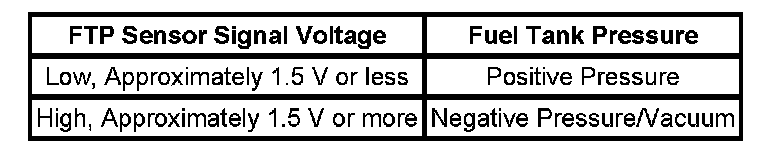

P0446
DTC P0446
DIAGNOSTIC INSTRUCTIONS
- Perform the Diagnostic System Check - Vehicle prior to using this diagnostic procedure. Initial Inspection and Diagnostic Overview
- Review Strategy Based Diagnosis for an overview of the diagnostic approach.
- Diagnostic Procedure Instructions provides an overview of each diagnostic category.
DTC DESCRIPTOR
DTC P0446
Evaporative Emissions (EVAP) Vent System Performance
CIRCUIT/SYSTEM DESCRIPTION

This DTC tests the evaporative emission (EVAP) system for a restricted or blocked EVAP vent path that would cause excess amounts of vacuum to be developed in the EVAP system. With the purge valve open and the canister vent valve open, if the EVAP system vacuum goes above a calibrated threshold, the test will fail.
CONDITIONS FOR RUNNING THE DTC
- DTCs P0106, P0107, P0108, P0116, P0117, P0118, P0120, P0121, P0122, P0123, P0220, P0222, P0223, P0442, P0443, P0449, P0451, P0452, P0453, P0454, P0464, P0496, P0608, P0609, P0641, P0651, P1516, P2101, P2119, P2120, P2122, P2123, P2125, P2127, P2128, P2135, P2138 are not set.
- The ignition voltage is between 11-18 volts.
- The barometric pressure (BARO) is more than 74 kPa.
- The fuel level is between 15-85 percent.
- The engine coolant temperature (ECT) is less than 35°C (95°F).
- The intake air temperature (IAT) is between 4-30°C (39-86°F).
- DTC P0446 runs once per cold start when the above conditions are met.
CONDITIONS FOR SETTING THE DTC
- The fuel tank vacuum is greater than 12 inches H2O.
- The above condition is present for at least 5 seconds.
- The FTP is less than -2.5 inches H2O or more than +5 inches H2O for 60 seconds after a cold start.
ACTION TAKEN WHEN THE DTC SETS
DTC P0446 is a Type B DTC.
CONDITIONS FOR CLEARING THE MIL/DTC
DTC P0446 is a Type B DTC.
DIAGNOSTIC AIDS
- An intermittent condition could be caused by a damaged EVAP vent housing, a temporary blockage at the EVAP canister vent solenoid valve inlet, or a pinched vent hose. A blockage in the vent system will also cause a poor fuel fill condition.
- An EVAP canister filter that is restricted can cause this DTC to set. Refer to Evaporative Emission System Cleaning.
CIRCUIT/SYSTEM VERIFICATION
1. Ignition ON and fuel cap removed, verify that the FTP sensor parameter is between 1.3-1.7 volts.
- If not within the specified range, go to the FTP sensor section in Circuit/System Testing.
2. Install the fuel cap.
3. With the engine running, the EVAP canister vent solenoid valve open and the EVAP canister purge solenoid valve commanded to 100 percent, the fuel tank vacuum should not increase to more than 11 inches H2O.
- If the fuel tank vacuum is greater than the specified range, go to the restriction section in Circuit/System Testing.
CIRCUIT/SYSTEM TESTING
IMPORTANT: Refer to the J 41413-200 operation manual for detailed instructions.
IMPORTANT: Perform the Circuit/System Verification before proceeding with the Circuit/System Testing.
Restriction
With the engine running, the EVAP canister vent solenoid valve open, and the EVAP canister purge solenoid valve commanded to 100 percent, the fuel tank vacuum should not increase to more than 11 inches H2O.
- If the fuel tank vacuum is greater than the specified value, isolate the restriction by disconnecting one component at a time while the EVAP canister purge solenoid valve is commanded to 100 percent and the vent valve is open.
FTP Sensor
1. Ignition ON and fuel cap removed, verify that the FTP sensor parameter is between 1.3-1.7 volts.
- If the FTP sensor parameter is not within the specified range, test the FTP low reference circuit for an open or high resistance. If the circuit tests normal, replace the FTP sensor.
2. Connect the J 41413-200 nitrogen/smoke hose to the J 41413-311 brass cone adapter. Disconnect the hose at the fuel cap end of the GE-41415-50. Connect the J 41413-311 to the disconnected hose on the GE-41415-50. Install the GE-41415-50 filler neck end only to the vehicle.
3. Start the engine.
4. Allow the engine to idle.
5. Use the Purge/Seal function to seal the system with a scan tool.
6. Command the EVAP canister purge solenoid valve to 20 percent.
7. Observe the vacuum/pressure gage on the J 41413-200 and the FTP parameter on the scan tool.
8. Verify that the vacuum increases to the abort limit on the scan tool or more than 3.2 volts, and the value is similar between the scan tool and the vacuum/pressure gage on the J 41413-200.
- If the values are not similar or the voltage is not within the specified range, replace the FTP sensor.
REPAIR INSTRUCTIONS
- Fuel Tank Pressure Sensor Replacement (1500 LWB - 117.3L (31 gal) Tank + E85) Fuel Tank Pressure Sensor Replacement (1500 SWB - 98.4L (26 gal) Tank + E85) Fuel Tank Pressure Sensor Replacement (1500 Series) Fuel Tank Pressure Sensor Replacement (2500 Series)
- Control Module References for ECM replacement, setup, and programming
- Evaporative Emission System Cleaning
REPAIR VERIFICATION
With the engine running, the EVAP canister vent solenoid valve open and the EVAP canister purge solenoid valve commanded to 100 percent, the fuel tank vacuum should not increase to more than 11 inches H2O.